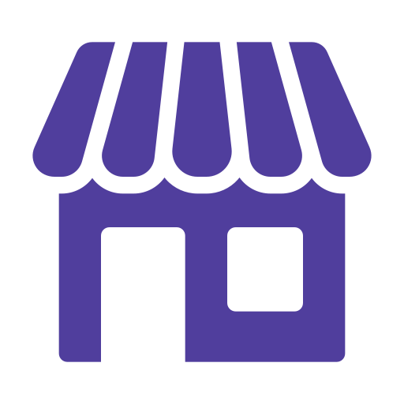

<mat-drawer-container class="wrapper-container" autosize>
    <mat-drawer #drawer class="example-sidenav" [opened]="isMobile ? false : true" [mode]="isMobile ? 'over' : 'side'">
        <app-sidebar></app-sidebar>
    </mat-drawer>
    <!--top-header-->
    <div class="wrapper-sidenav-content d-flex justify-content-between mt-2 py-2 p-sm-4">

        <button type="button" class="border-0 bg-transparent " (click)="drawer.toggle()"><mat-icon  class=" py-auto blbg  home text-white" >keyboard_arrow_left</mat-icon>
            </button>
        <div class="d-flex align-items-center ">
            <div class="d-flex select-loc">
                <span>Da Otto</span>
                <div class="icon_wrap ml-3">
                    <i class="material-icons up_icon">keyboard_arrow_up</i>
                    <i class="material-icons down_icon">keyboard_arrow_down</i>
                </div>
            </div>

            <form>
                <div class="search">
                    <i class="material-icons serach-icon">search</i>
                    <input type="text" placeholder="Search for Restaurants">
                </div>
            </form>


            <button type="button" class="border-0 bg-transparent " (click)="openDialog()">
                    <i class="material-icons  py-auto blbg  text-white">filter_list</i>
                </button>


            <button type="button" class="border-0 bg-transparent "><i class="material-icons  py-auto orbg  text-white">shopping_cart</i>
                </button>

        </div>


    </div>


    <router-outlet></router-outlet>

</mat-drawer-container>